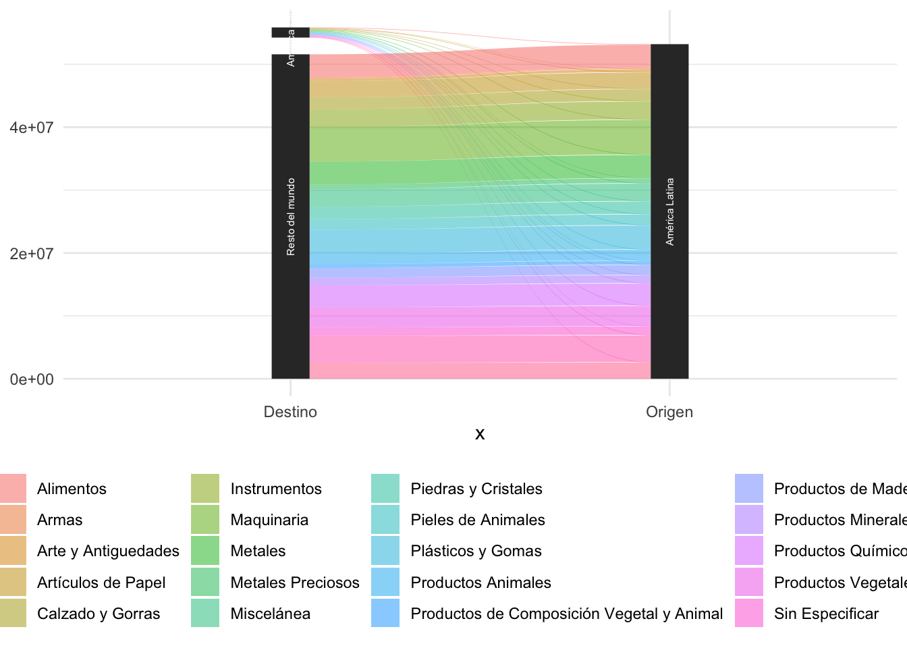

El objetivo de este post es analizar qué países en América Latina exportan qué tipo de productos utilizando un grafico de sets paralelos del parquete ggforce que permite visualizar en una manera muy lógica los datos.
Cómo en los otros posts, utilizaría el API de Open Trade Statistics. En primer lugar, aprendo las librarías necesarias para realizar el analisis:
library(tradestatistics) #parquete de los datos
library(tidyverse)
library(ggplot2)
library(ggforce) #para graficos de sets paralelosEn segundo lugar, eligo los datos que necesito para realizar el set de parelelo. Solamente se analiza para el año 2018:
export_producto_2017 <- readr::read_csv("https://raw.githubusercontent.com/cienciadedatos/datos-de-miercoles/master/datos/2019/2019-05-01/comercio_hispanoamerica_mundo_agregado.csv") %>%
filter(anio == "2017") %>%
select(nombre_comunidad_producto,
pais_origen_pertenece_a_hispanoamerica,
pais_destino_pertenece_a_hispanoamerica) %>%
rename('Producto' = 'nombre_comunidad_producto') %>%
mutate(
Origen = ifelse(pais_origen_pertenece_a_hispanoamerica == 1, "América Latina", "Resto del mundo"),
Destino = ifelse(pais_destino_pertenece_a_hispanoamerica == 1, "América Latina", "Resto del mundo")) %>%
group_by(Producto,
Origen,
Destino) %>%
mutate(value = n()) %>%
ungroup() %>%
select(Producto, Origen, Destino, value)
export_producto_graficar <- export_producto_2017 %>%
gather_set_data(2:3) %>%
ggplot(aes(x, id = id, split = y, value = value)) +
geom_parallel_sets(aes(fill = Producto), alpha = 0.5, axis.width = 0.1) +
geom_parallel_sets_axes(axis.width = 0.1) +
geom_parallel_sets_labels(color = "white", angle = 90, size = 2) +
theme_minimal() +
theme(legend.position = "bottom")
theme(axis.text.y = element_blank()) +
labs(title = "Productos exportado según origen y destino (2017)",
caption = "Fuente: Open Trade Statistics")
## List of 3
## $ axis.text.y: list()
## ..- attr(*, "class")= chr [1:2] "element_blank" "element"
## $ title : chr "Productos exportado según origen y destino (2017)"
## $ caption : chr "Fuente: Open Trade Statistics"
## - attr(*, "class")= chr [1:2] "theme" "gg"
## - attr(*, "complete")= logi FALSE
## - attr(*, "validate")= logi TRUE
export_producto_graficar